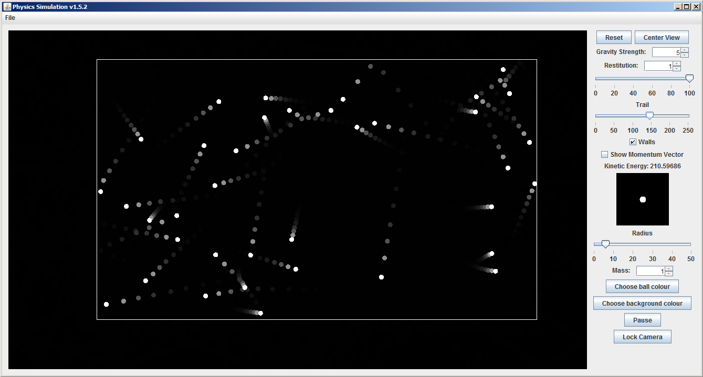
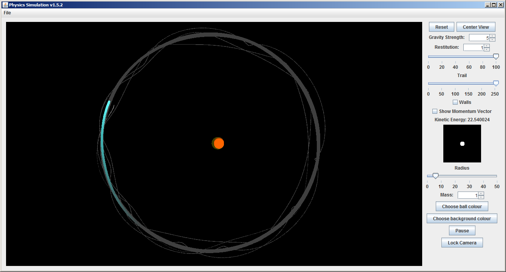

Welcome to PhysicsSim
This is a simulation of 2D particles in a plane. It has the following features:
- Collision detection between spheres
- Gravitation between the particles
- Ability to change physical parameters like gravity strength and the restitution of collisions
- Ability to create particles of different masses and sizes
- Freezing of time
Instructions:
- To create a ball, press the left mouse button where you want to create it, and drag the mouse to define its velocity.
- Right click and drag to move the view, and use the mouse wheel to zoom in and out.
- Click the 'Lock Camera' button to be able to select a ball to lock the view onto.
Some examples
Gases
An ideal gas can be simulated by turning on the walls. Since the Kinetic theory of Gases models them as a collection of particles which only interact with each other through elastic collisions, Newton's Laws are sufficient to simulate ideal gases.
Simulation of gas molecules in a closed container
Multiple body systems
By turning off the walls, a simulation of many large bodies can be created. It is possible to make systems having planets with their own moons by careful placement of particles.
A three body system, with a sun, a planet and its moon